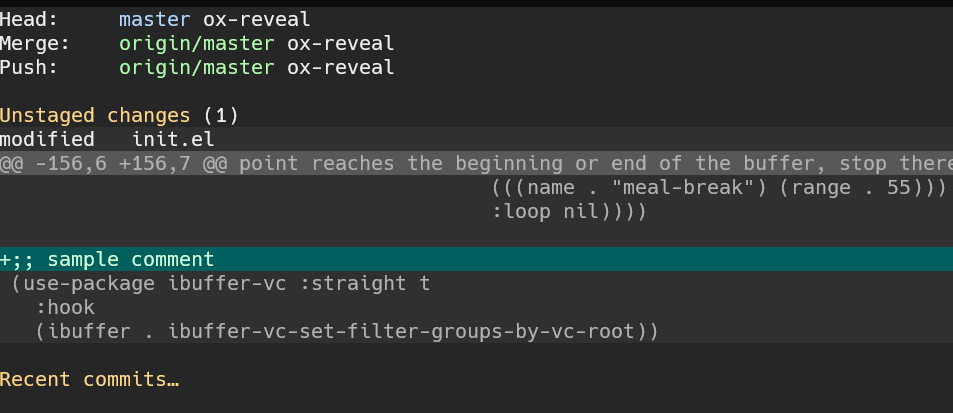
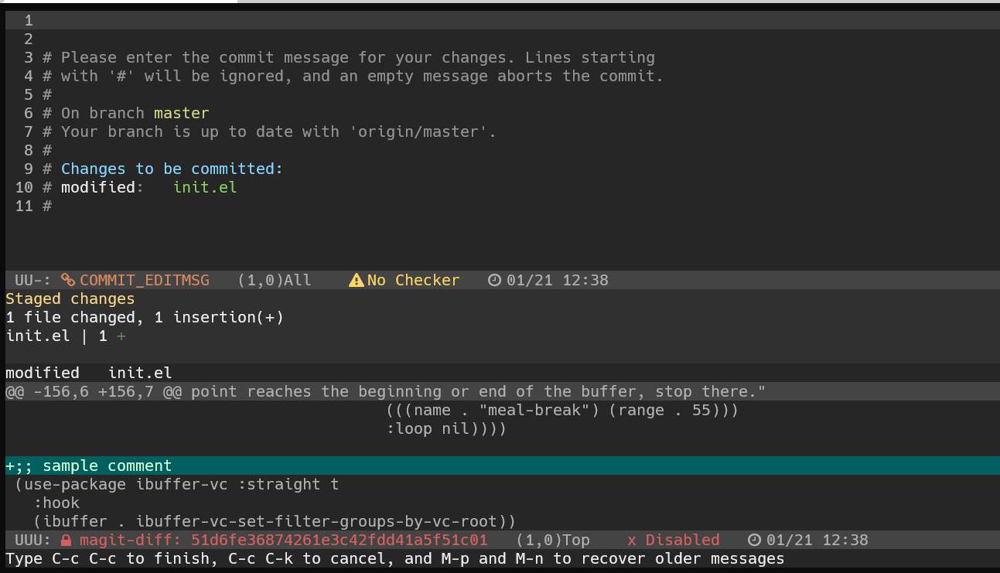
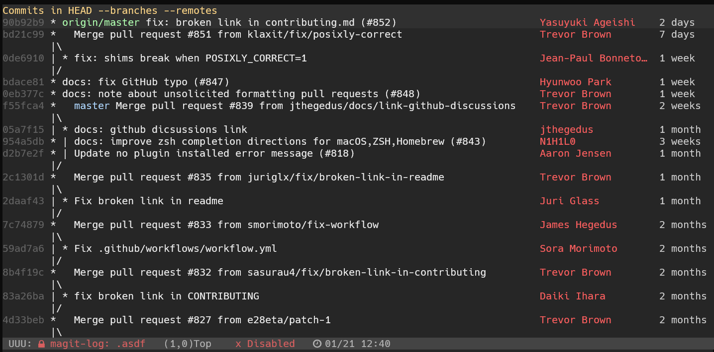
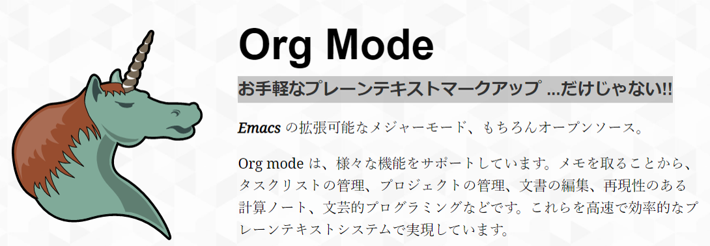

これがあるから emacs を使うと言わせるパッケージたちです。
emacs を使っている人が少ないですが、emacs のこのパッケージぐらいは emacsを使ってなくても知っとけと思い LT を準備しました。
開発者には必須ツールの gitツール。 グラフィカルなインターフェースと、gitコマンドの殆どの操作が可能な点が特徴です。



殆どの git コマンドを簡単なショートカットで実行できるため、 普通にコマンドを打つのが阿呆らしくなります。
ホームページのトップです。  https://orgmode.org/ja/
何でもできてしまうすごいやつです。
何でもできると言っても何でもやる人は過激派です。
たまに論文書いたり、ホームページ作成したりする人はいますが、 もっとも使われる用途はやはりメモとTODO管理です。
文章が構造化されることはどんな状況においても発生します。それが見やすい状態で表示される。 ショートカットや表現方式が豊富であり、様々なメモを取りやすいというのが愛されるポイントになっています。
イメージ的には強化版 markdown といった感じです。
メモに様々なタグを付けれて、それをカレンダーと合わたり、どこからでも参照できたりすることができる感じです。 タグとTODOの状態は別なんですが、イメージ的にはそんな感じ。
これは実際に見た方が早いので実演
どういうことか分かりますよね？
Evil is an extensible vi layer for Emacs. It emulates the main features of Vim, and provides facilities for writing custom extensions. Also see our page on EmacsWiki.
小指いたいしね。
僕はemacsのキーバインド好きなので、使ってないパッケージなのでこんなもんです。 vimmer は試してみたらといった感じです。
今回は emacs の有名なキラーパッケージを紹介しました。 使わないなら、これだけ知っとけば emacs については大丈夫です。 覚えて帰ってください。